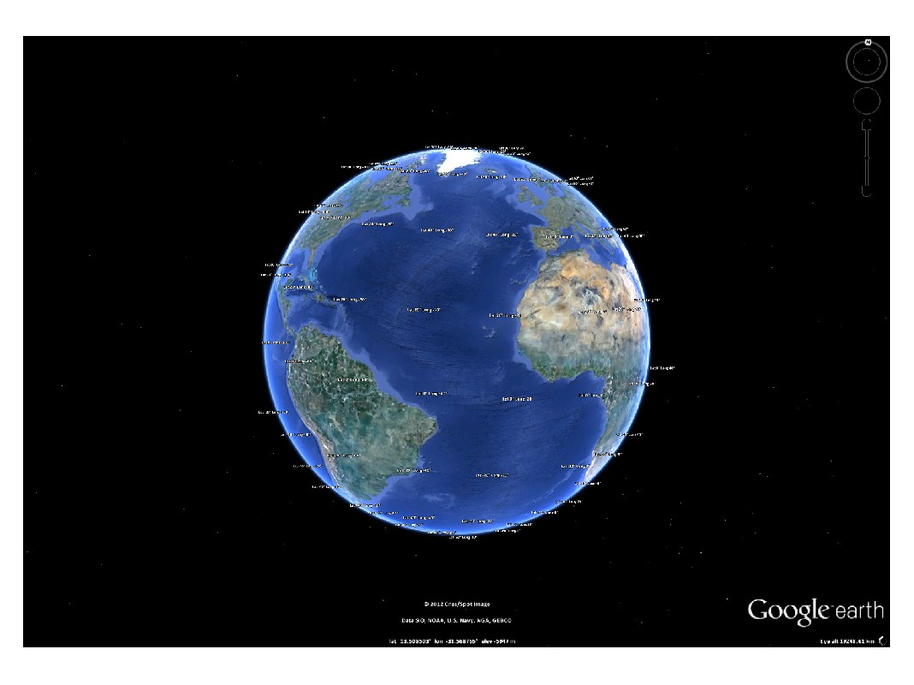

kml.text
Places text in the coordinates defined by longitude, latitude and altitude.
Contents
Syntax
kml.text(long, lat, alt, txt) kml.text(...,'PropertyName',PropertyValue,...)
Description
Places text in the coordinates defined by the inputs longitude, latitude and altitude. To place more than one text, pass an array of coordinates, and a cell array of texts.
The units for latitude and longitude are normally given in degrees, but this can be changed by calling: kml.useDegrees; or kml.useRadians; before plotting. Altitude is always given in meters.
It is possible to fine tune the text properties using name-value pairs:
kml.text(...,'PropertyName',PropertyValue,...)
Properties
| Property Name | Type | Description |
|---|---|---|
| 'name' | string | Name of the text plot inside the kml file |
| 'id' | string | Internal id of this text plot inside the kml |
| 'description' | string | A short description of what the text plot represents |
| 'visibility' | true/false | Control the initial visibility of the text plot |
| 'altitudeMode' | string | Choose if the altitude value is absolute to the earth model, relative to the ground level, or should be clamped to the ground. Valid inputs: 'absolute', 'relativeToGround', 'clampToGround' |
| 'labelScale' | double | Defines the size of the text. Can be one input for all markers, or an array with the same size as Latitude and Longitude, with the size of each marker |
| 'timeStamp' | kml date string | Associates the text plot to a moment in time. Should not be used together with timeSpan. Should be a string in the XML time format (more information available here) |
| 'timeSpanBegin' | kml date string | Defines the moment in time where the text plot starts to exist. Should not be used together with timeStamp. Should be a string in the XML time format (more information available here) |
| 'timeSpanEnd' | kml date string | Defines the moment in time where the text plot finishes to exist. Should not be used together with timeStamp. Should be a string in the XML time format (more information available here) |
Example
% Create a new kml object k = kml('my kml file'); % Places text labels for every 10° of latitude and longitude f = k.createFolder('Coordinates'); for lat = -80:20:80 for long = -180:20:170 f.text(long,lat,1e5,sprintf('Lat %g° Long %g°',lat,long),'labelScale',3) end end % Save the kml and open it in Google Earth k.run;
This is the result of running this example:
This file is part of the kml toolbox. Copyright 2012 Rafael Fernandes de Oliveira (rafael@rafael.aero)